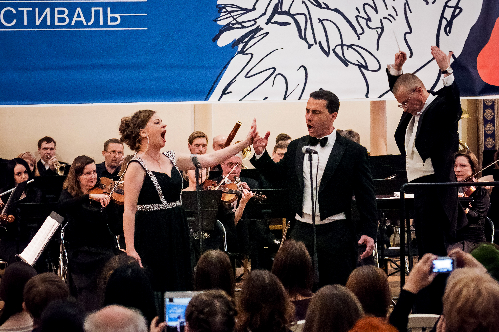

Jahre künstlerische Laufbahn zwischen Brasilien, den Vereinigten Staaten und Europa

Biografie
Ein Weg durch Oper, Fernsehen, Crossover und soziale Medien, der die Kraft des klassischen Gesangs zu immer mehr Menschen bringt.
Max Wilson Pereira ist ein brasilianischer Tenor mit Wohnsitz in Wien, ein Künstler mit markanter Bühnenpräsenz und einer Stimme, die zwischen lyrischer Tradition und direkter Kommunikation mit dem Publikum entstanden ist. Neben der Operntechnik widmete er viele Jahre dem Musicalgesang und entwickelte auch eine weichere, intimere und ausdrucksstarke Stimmgebung. Geboren in São Paulo und aufgewachsen in Rio de Janeiro, entdeckte er mit 18 Jahren seine Leidenschaft für den Gesang, als er Luciano Pavarotti hörte. Seitdem verwandelte er diese Inspiration in eine Karriere, die Bühnen, Fernsehen, Aufnahmen und digitale Plattformen verbindet.
Instagram-Follower, die seine Kunst und seinen Humor begleiten
künstlerische und musikalische Basis einer internationalen Karriere
Ausbildung und Erste Schritte
Schon in jungen Jahren begann Max sein Studium beim Tenor Eduardo Alvares, während er die CAL, Casa das Artes de Laranjeiras, besuchte, wo er die professionelle Schauspielausbildung abschloss. Die Theaterausbildung wurde zu einem wesentlichen Teil seiner künstlerischen Identität: nicht nur singen, sondern eine Geschichte erzählen, die Bühne ausfüllen und eine lebendige Verbindung zum Publikum schaffen.
Nach Jahren des Studiums von klassischem Gesang, Musiktheorie und Klavier ging er 2005 nach New York, wo er bei Evelyn La Quaif studierte. Im folgenden Jahr wurde er von Professor Sebastian Vittucci eingeladen, in Wien zu studieren, wo er an der Konservatorium Wien Privatuniversität klassischen Gesang und Operette belegte. Außerdem studierte er am Vienna Konservatorium bei dem Tenor Agim Hushi, wo er seinen Bachelor als Opernsolist abschloss.
Bühnen, Oper und Fernsehen
In Österreich wirkte Max bei Konzerten, Opern und Operetten mit und überzeugte in Rollen wie Nemorino in L'Elisir d'Amore von Donizetti und Herzog von Urbino in Eine Nacht in Venedig von Johann Strauss. 2007 sang er beim Gran Concerto Lírico di Ferragosto und interpretierte italienische Arien vor einem anspruchsvollen Publikum.
Zu den wichtigen Momenten seiner internationalen Laufbahn gehört, dass er zweimal nach Russland eingeladen wurde. Einer dieser Auftritte fand beim Taneyevsky Festival 2017 mit dem Vladimir Governor Symphony Orchestra unter der Leitung von Maestro Artiom Markin statt.
Nach drei Jahren in Wien kehrte er auf Einladung von Sony Music nach Brasilien zurück, um Teil der Gruppe Quattro zu werden und eine CD aufzunehmen. 2009 trat er im Oratorium Colombo von Carlos Gomes im Theatro Municipal do Rio de Janeiro auf. 2010 nahm er an der DVD-Aufzeichnung von Hebe Camargo teil und sang Dio come ti amo in der Credicard Hall in São Paulo und erschien auch in der Telenovela Tempos Modernos in einer Szene aus Tosca an der Seite von Alessandra Maestrini.
Zu seinem Werdegang gehören außerdem Arbeiten mit Namen wie Bibi Ferreira, eine Mitwirkung in der Miniserie Aline, die Uraufführung der Oper Fedra e Hipólito im Palácio das Artes sowie seine Tätigkeit als Vocal Coach bei Domingão do Faustão, wo er Jonatas Faro im Format Artista Completão unterstützte.
Crossover, Humor und Digitales Publikum
In den letzten Jahren brachte Max seine Stimme über soziale Medien zu einem noch größeren Publikum. Indem er klassische Technik, Popmusik, kreative Parodien und Straßenperformances verbindet, entwickelte er eine eigene Sprache: anspruchsvoll, ohne distanziert zu sein, unterhaltsam, ohne die Emotion zu verlieren, populär, ohne stimmliche Exzellenz aufzugeben.
Seine Videos haben bereits mehr als 1 Million Aufrufe erreicht, und seine digitale Community zählt über 200.000 Instagram-Follower und Tausende von YouTube-Abonnenten. Mit Charisma, Humor und einer klassisch ausgebildeten Stimme bringt Max die Oper Menschen näher, die vielleicht nie gedacht hätten, dass sie davon berührt werden könnten.
Der Aktuelle Moment
Heute widmet Max Wilson Pereira einen großen Teil seiner Energie dem Aufbau einer immer stärkeren digitalen Präsenz. Er erstellt Videos, die Oper, klassischen Gesang und Crossover einem Publikum näherbringen, das vielleicht nie gedacht hätte, von diesem Repertoire berührt zu werden. In Wien ansässig und tief mit Brasilien verbunden, verwandelt er Straßen, Strände, Bahnhöfe, Wohnungen und Alltagssituationen in kleine Bühnen, auf denen Gesangstechnik auf Überraschung, Emotion und Humor trifft.
Seine Arbeit in den sozialen Netzwerken entsteht aus dem Wunsch zu zeigen, dass die lyrische Stimme nicht fern von den Menschen leben muss. In bewegenden Performances, musikalischen Parodien, Begegnungen mit Fremden und humorvollen Videos bringt Max die Oper in neue Zusammenhänge und weckt Neugier, Lachen und spontane Reaktionen. In dieser Begegnung zwischen künstlerischer Exzellenz und direkter Kommunikation schafft er weiterhin neue Wege, seine Kunst mit denen zu teilen, die ihn bereits begleiten, und mit denen, die ihn noch entdecken werden.